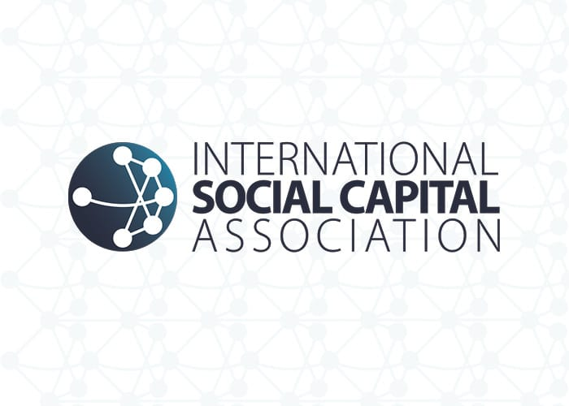
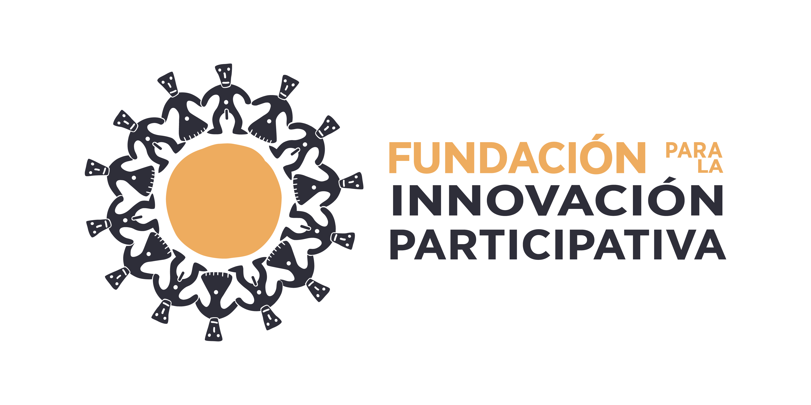
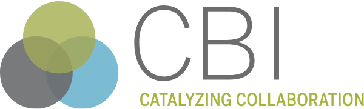
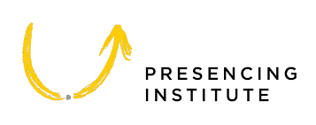
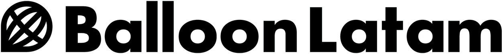
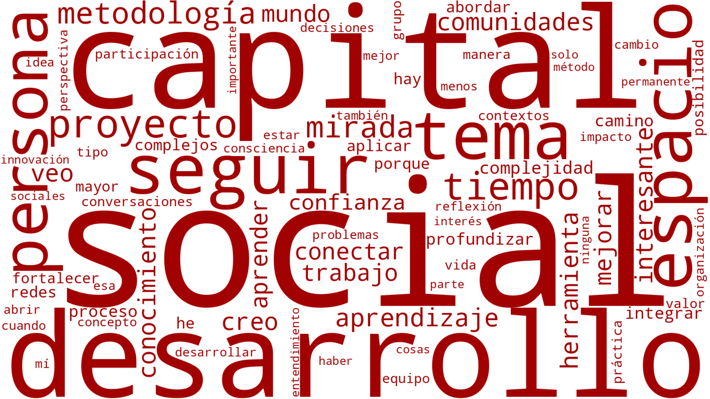

Encuentros
Un registro del camino recorrido y el impacto generado a través de nuestros ciclos de diálogo e innovación colaborativa en Chile.
Encuentros Realizados

International Social Capital Association open_in_new
El primer Encuentro del C3S se realizó en el marco del Periplo por el Capital Social, una iniciativa impulsada por el Programa de Innovación y Sociotecnología junto al Presidente de la International Social Capital Association, Tristan Claridge, quien estuvo a cargo de la presentación inaugural del Círculo junto a destacados constructores de comunidades en Chile.

Fundación para la Innovación Participativa open_in_new
El ciclo de encuentros continuó en noviembre de 2025 con la realización del segundo encuentro, titulado "Praxis de la Innovación Participativa: Cómo hacer gobernables los desafíos de alta complejidad". En esta sesión, su director Alfredo del Valle expuso su metodología desarrollada durante más de 40 años, centrada en herramientas de planificación para abordar problemas sociales complejos.

Consensus Building Institute (CBI) open_in_new
La continuidad del Círculo se fortaleció en marzo de 2026 con el tercer encuentro, el cual contó con la presentación del Consensus Building Institute (CBI). Bajo el liderazgo de Betsy Fierman, Melanie Gárate y David Plumb, la charla se centró en el enfoque de "Ganancias Mutuas" (Mutual Gains Approach) y la resolución de conflictos socioambientales en Latinoamérica.

Presencing Institute open_in_new
Posteriormente, en abril, se llevó a cabo el cuarto encuentro, protagonizado por el Presencing Institute bajo el título "Transformación social y el futuro emergente: el camino hacia un liderazgo ecosistémico". Katrin Kaufer y Sebastián Jung guiaron a la audiencia en una exploración de la Teoría U, enfatizando la necesidad de conectar con el "campo social" y los propósitos invisibles para generar impacto.

Balloon Latam open_in_new
En mayo, el quinto encuentro puso el foco en la vinculación territorial con la presentación "Cuando las relaciones sociales cambian: el caso de Balloon Latam". Sebastián Salinas, Juan Ignacio Cordero, Martín Salas y Pamela Barroso detallaron cómo su modelo de empresa social ha logrado fortalecer la cohesión en comunidades rurales de Chile a través del emprendimiento y la innovación.
Programa de Innovación y Sociotecnología (PISCT) open_in_new
En junio concluyó el 1er Ciclo de Encuentros C3S con la presentación "Biología del conocer, Conversar y Amar: Una opción para construir Capital Social", dictada por el profesor Carlos Vignolo, director del Programa de Innovación y Sociotecnología (PISCT). En esta jornada de cierre, se profundizó en la intersección de la plataforma filosófica constructivista radical, los avances de la neurociencia y la ingeniería de sistemas como pilares fundamentales para la construcción de Capital Social.
Resultados e Impacto
Evaluación de Jornadas
Percepción del Beneficio Obtenido por los Asistentes
Evolución de la nota promedio asignada por jornada (Escala de 1.0 a 7.0)
Clima Emocional y Disposición Anímica
Síntesis de Estados de Ánimo Post-Encuentros C3S
Porcentaje de menciones para el Top 10 de estados de ánimo registrados al finalizar los Encuentros
Nube de Conceptos Clave
Basada en las respuestas a la pregunta: "En una frase, ¿cuál es tu balance de esta presentación?"

¿Quieres ser parte del próximo Ciclo?
Súmate a nuestra red de colaboración y recibe invitaciones exclusivas para los próximos conversatorios y talleres de capital social.